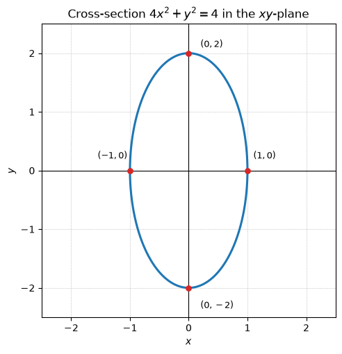
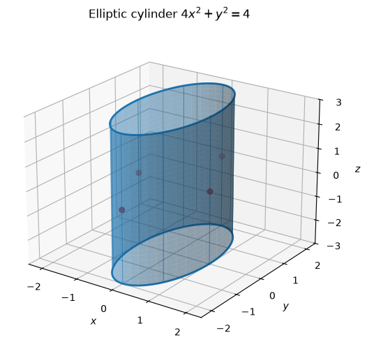
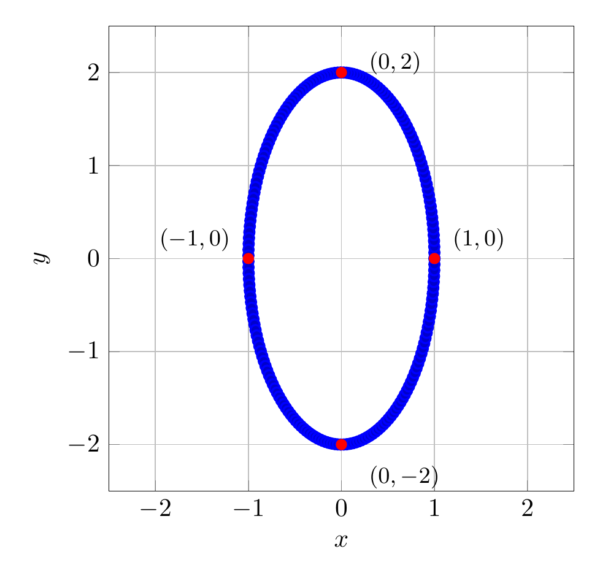
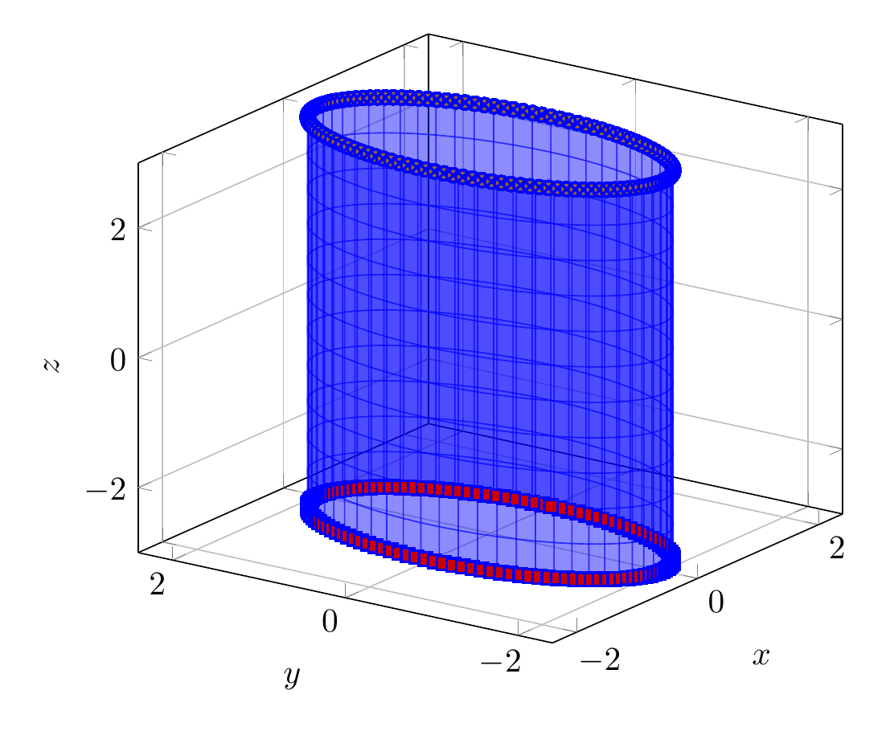

Path: mcma-Nex-N2-Pro/calculus-12.6.4/chat_20260824_172136_310992_utc_0800
Problem
Please solve the math problem in the image.

End of problem
Answer
To describe the surface, rewrite the equation in standard ellipse form:
$$
4x^2+y^2=4
\quad\Longrightarrow\quad
\frac{x^2}{1^2}+\frac{y^2}{2^2}=1.
$$
Because there is no $z$ variable, $z$ can be any real number. So the cross-section in every horizontal plane $z=c$ is the same ellipse
$$
\frac{x^2}{1^2}+\frac{y^2}{2^2}=1,
$$
centered on the $z$-axis. The ellipse has semi-axis $1$ in the $x$-direction and semi-axis $2$ in the $y$-direction.
Therefore, the surface is an elliptic cylinder with axis along the $z$-axis. To sketch it, draw the ellipse in the $xy$-plane and extend it vertically in both the positive and negative $z$ directions.
$\boxed{\text{The surface }4x^2+y^2=4\text{ is an elliptic cylinder along the }z\text{-axis.}}$
---


\documentclass[border=10pt]{standalone}
\usepackage{pgfplots}
\pgfplotsset{compat=1.18}
\begin{document}
\begin{tikzpicture}
\begin{axis}[
axis equal,
xlabel={$x$},
ylabel={$y$},
grid=major,
xmin=-2.5, xmax=2.5,
ymin=-2.5, ymax=2.5,
width=8cm,
height=8cm
]
\addplot+[domain=0:360, samples=200, thick, blue] ({cos(x)}, {2*sin(x)});
\addplot[only marks, mark=*, red] coordinates {(1,0) (-1,0) (0,2) (0,-2)};
\node[anchor=west, font=\small] at (axis cs:1.1,0.2) {$(1,0)$};
\node[anchor=east, font=\small] at (axis cs:-1.1,0.2) {$(-1,0)$};
\node[anchor=west, font=\small] at (axis cs:0.2,2.1) {$(0,2)$};
\node[anchor=west, font=\small] at (axis cs:0.2,-2.35) {$(0,-2)$};
\end{axis}
\end{tikzpicture}
\end{document}

\documentclass[border=10pt]{standalone}
\usepackage{pgfplots}
\pgfplotsset{compat=1.18}
\begin{document}
\begin{tikzpicture}
\begin{axis}[
view={-55}{22},
xlabel={$x$}, ylabel={$y$}, zlabel={$z$},
xmin=-2.4, xmax=2.4,
ymin=-2.4, ymax=2.4,
zmin=-3, zmax=3,
width=9cm, height=8cm,
grid=major
]
\addplot3[
surf, shader=flat, opacity=0.45,
domain=0:360, y domain=-3:3,
samples=60, samples y=12,
blue
] ({cos(x)}, {2*sin(x)}, {y});
\addplot3+[domain=0:360, samples=120, thick, blue] ({cos(x)}, {2*sin(x)}, {-3});
\addplot3+[domain=0:360, samples=120, thick, blue] ({cos(x)}, {2*sin(x)}, {3});
\end{axis}
\end{tikzpicture}
\end{document}

End of answer